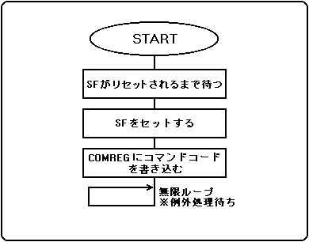
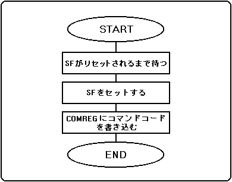
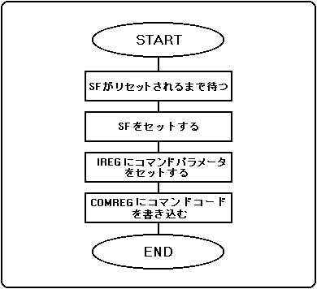
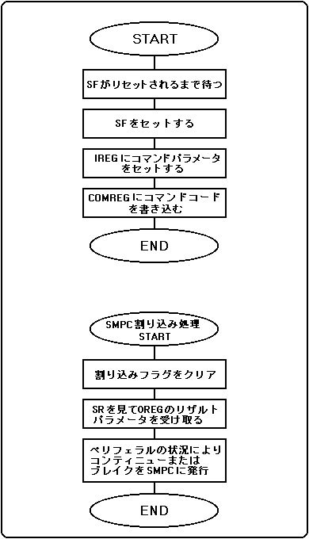
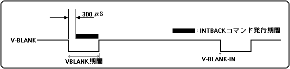
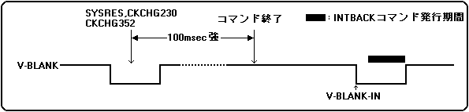
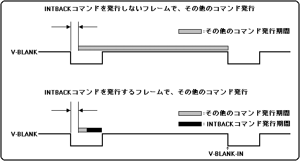

★HARDWARE Manual
★SMPCユーザーズマニュアル
★HARDWARE Manual
★SMPCユーザーズマニュアル
分類 | コマンド |
|---|---|
A | MSHON,SYSRES,NMIREQ,CKCHG352,CKCHG320 |
B | SSHON,SSHOFF,SNDON,SNDOFF,CDON,CDOFF,RESENAB,RESDISA |
C | SETTIME,SETSMEM |
D | INTBACK |
図2.1 分類Aコマンドフロー

図2.2 分類Bコマンドフロー

図2.3 分類Cコマンドフロー

図2.4 分類Dコマンドフロー

| 注）SMPC割り込みをマスク(SMPC割り込みを使用せず)して、SMPC割込フラグおよびSF クリアをコマンド発行後にポーリングすることでもSMPC割り込みルーチン同様の 処理を実行できます。 |
図2.5 INTBACKコマンド発行タイミング

 |
クロックチェンジコマンドを使用する場合は、必ず、システムライブラリを使用してください。 |
|---|
図2.6 SYSRES,CKCHG320,CKCHG352コマンド実行後のINTBACKコマンド発行タイミング

図2.7 その他のコマンド発行

| No. | コマンド名称 | コマンド略称 | マスタSH-2からの コマンド発行 | スレーブSH-2からの コマンド発行 | |
|---|---|---|---|---|---|
| 1 | × | マスタ SH-2 ON | MSHON | ○ | ○ |
| 2 | ○ | スレーブ SH-2 ON | SSHON | ○ | × |
| 3 | ○ | スレーブ SH-2 OFF | SSHOFF | ○ | × |
| 4 | ○ | サウンド ON | SNDON | ○ | ○ |
| 5 | ○ | サウンド OFF | SNDOFF | ○ | ○ |
| 6 | × | CD ON | CDON | ○ | ○ |
| 7 | × | CD OFF | CDOFF | ○ | ○ |
| 8 | × | システム全体リセット | SYSRES | ○ | ○ |
| 9 | × | クロックチェンジ352 | CKCHG352 | ○ | × |
| 10 | × | クロックチェンジ320 | CKCHG320 | ○ | × |
| 11 | ○ | NMIリクエスト | NMIREQ | ○ | ○ |
| 12 | ○ | リセットイネーブル | RESENAB | ○ | ○ |
| 13 | ○ | リセットディセーブル | RESDISA | ○ | ○ |
| 14 | ○ | インタラプトバック | INTBACK | ○ | × |
| 15 | ○ | SMPCメモリ設定 | SETSMEM | ○ | ○ |
| 16 | ○ | 時刻設定 | SETTIME | ○ | ○ |
| ×印はユーザーの使用禁止 |
★HARDWARE Manual
★SMPCユーザーズマニュアル